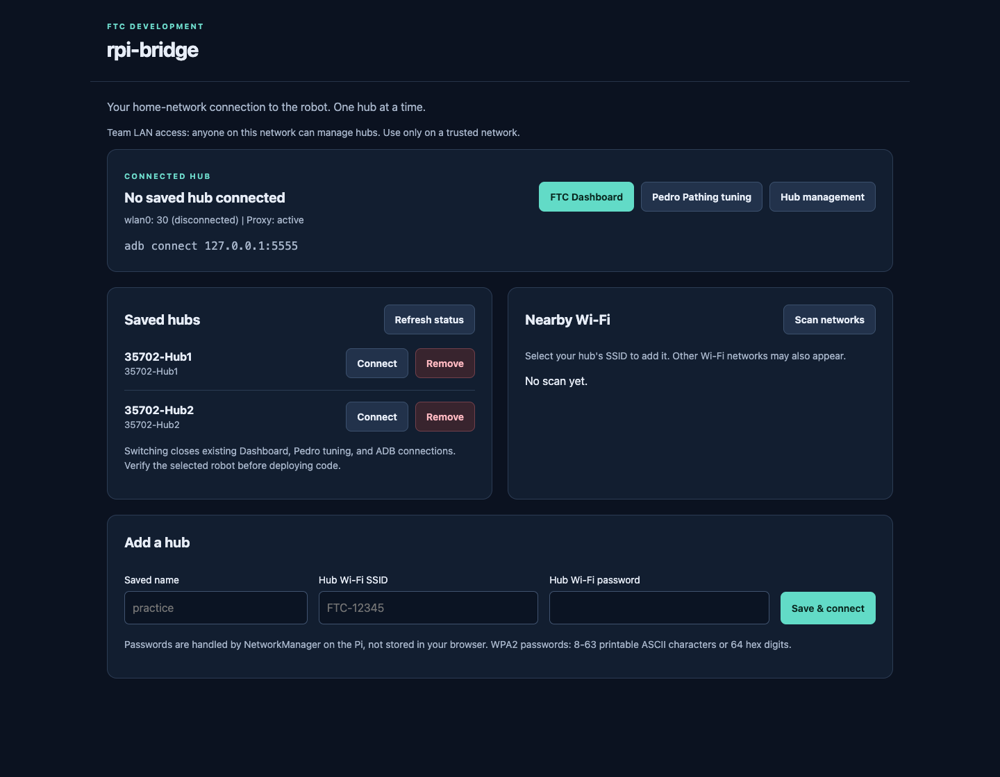

Plug in. Stay online.
Connect the Pi to your router with Ethernet. Your laptop stays on the same team network, with internet access intact.
Built for FTC practice nights
Stop choosing between your Control Hub and the internet. Let a Raspberry Pi make the connection while your laptop stays on the team's Wi-Fi.
For FTC students & mentors. Development only, not competition.
Team Wi-Fi + internet
Runs rpi-bridge
One selected robot at a time
Same robot tools. No Control Hub modifications.
LESS NETWORK SWITCHING. MORE ROBOT BUILDING.
The Pi handles the robot's Wi-Fi connection. You handle the next breakthrough.
Connect the Pi to your router with Ethernet. Your laptop stays on the same team network, with internet access intact.
Save your Control Hubs in the browser portal. Connect, switch, disconnect, or remove a saved hub without opening a terminal.
Launch Dashboard or AutoTune from the portal, or connect Android Studio with the displayed ADB command.
Dashboard and AutoTune must already be installed and running in your robot app. ADB must already be enabled; normal robot authorization still applies.
MEET THE HUB MANAGER
No app to install on your laptop. Open your Pi's address, choose a saved hub, and get back to building.

A shared team connection. Everyone using the Pi shares its selected robot. Always check the hub name before deploying code or running an OpMode.
Switch robots intentionally. Changing hubs closes Dashboard, AutoTune, and ADB connections. Refresh your tools and reconnect ADB afterward.
YOUR NEXT PRACTICE STARTS HERE
The student-friendly guide walks you through installation, connecting your first hub, and opening your robot tools.
A PRACTICE TOOL, NOT A COMPETITION NETWORK
The local portal has no login, and its HTTP connection is not encrypted. Anyone who can reach the Pi can manage hubs and access forwarded robot services. Never expose the Pi to the internet or enable router port forwarding. This is not a replacement for a Driver Station.
This public website is only a showcase. It cannot connect to your Pi, control a robot, or collect hub passwords.